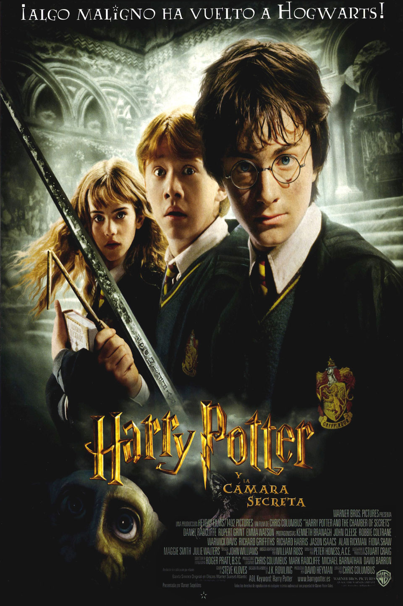

Harry Potter y la cámara secreta (2002)

Sinopsis
A pesar de las advertencias de una extraña criatura llamada Dobby, Harry regresa a Hogwarts para cursar su segundo año. Muy pronto, extraños y aterridores sucesos comienzan a sacudir el colegio: varios estudiantes y criaturas aparecen misteriosamente petrificados. Las sospechas apuntan a que alguien ha abierto la mítica Cámara Secreta, liberando a un monstruo mortal que busca purgar la escuela de los magos nacidos de muggles. Harry, Ron y Hermione deberán descifrar los secretos del diario de un antiguo alumno llamado Tom Riddle y encontrar la cámara para salvar a Hogwarts del cierre definitivo.
Ficha Técnica
- Año: 2002
- Director: Chris Columbus
- Duración: 161 minutos
Reparto Principal
- Daniel Radcliffe como Harry Potter
- Emma Watson como Hermione Granger
- Rupert Grint como Ron Weasley